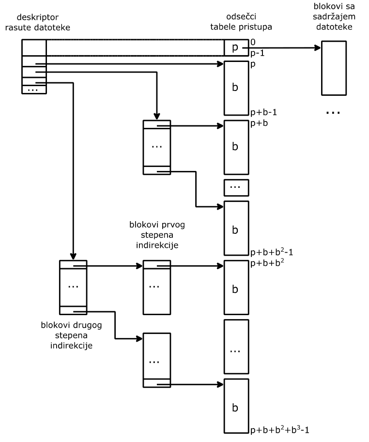

Datoteke
Veljko Petrović
Jul, 2025
Datoteke
Svojstva datoteka
- Svaka datoteka poseduje ime koje bira korisnik. Poželjno je da ime datoteke ukazuje na:
- njen konkretan sadržaj
- na vrstu njenog sadržaja (radi klasifikacije datoteka po njihovom sadržaju)
- Zato su imena datoteka dvodelna npr:
- godina1.txt
- Može da predstavlja ime datoteke, koja sadrži podatke o studentima prve godine studija. Na to ukazuje prvi deo imena godina1, dok drugi deo imena txt ove datoteke govori da je datoteka tekstualna, odnosno da sadrži samo vidljive ASCII znakove.
Svojstva datoteka
- Rukovanje datotekom obuhvata ne samo rukovanje njenim sadržajem, nego i rukovanje njenim imenom. Izmena imena datoteke moguća je kod:
- Stvaranja datoteke
- Editovanja
- Kompilacije
- Kopiranja
Organizacija datoteka
- Datoteke se grupišu u skupove datoteka (datoteke sa podacima o studentima pojedinih godina studija istog odseka pripadaju istom skupu).
- Svaki skup datoteka predstavlja imenik (directory, folder) koji sadrži imena svih datoteka koje pripadaju datom skupu.
- Radi razlikovanja imenika, svaki od njih poseduje ime koje bira korisnik. Na primer:
- odsek
- može da predstavlja ime imenika, koji obuhvata datoteke sa podacima o studentima svih godina studija istog odseka.
Organizacija datoteka
- Razvrstavanjem datoteka uz pomoć imenika nastaje hijerarhijska organizacija datoteka, u kojoj su na višem nivou hijerarhije imenici, a na nižem nivou se nalaze datoteke, čija imena su sadržana u ovim imenicima.
- Hijerarhijsku oznaku ili putanju (path name) datoteke obrazuju ime imenika za koji je datoteka vezana i ime datoteke. Delove putanje obično razdvaja znak / (ili znak ):
- odsek1/godina1.txt
- predstavlja putanju datoteke, koja sadrži podatke o studentima prve godine studija sa prvog odseka.
- Uobičajeno je da se ime imenika završava znakom /
Organizacija datoteka
- Hijerarhijska organizacija datoteka ima više nivoa, kada jedan imenik sadrži, pored imena datoteka, i imena drugih imenika, odnosno obuhvata, pored datoteka, i druge imenike.
- Obuhvaćeni imenici se nalaze na nižem nivou hijerarhije. Na primer, imenik fakultet obuhvata imenike pojedinih odseka.
- Na vrhu hijerarhijske organizacije datoteka se nalazi korenski imenik (root) koji obično nema ime.
Organizacija datoteka
- U slučaju više nivoa u hijerarhijskoj organizaciji datoteka, putanju datoteke obrazuju imena imenika sa svih nivoa hijerarhije (navedena u redosledu od najvišeg nivoa na dole) kao i ime datoteke.
- Na primer:
- /fakultet/odsek1/godina1.txt
- predstavlja putanju datoteke godina1.txt, koja pripada imeniku odsek1. Ovaj imenik pripada imeniku fakultet, a on pripada korenskom imeniku /.
Organizacija datoteka
- Hijerarhijska organizacija datoteka dozvoljava da postoje datoteke (imenici) sa istim imenima, pod uslovom da pripadaju raznim imenicima.
Organizacija datoteka
- U hijerarhijskoj organizaciji datoteka korenskom imeniku pripadaju imenici fakultet1 i fakultet2.
- Svaki od njih sadrži imenike odsek1 i odsek2. Pri tome, oba imenika sa imenom odsek1 sadrže datoteku godina1.txt.
- Putanje omogućuju razlikovanje istoimenih imenika, odnosno istoimenih datoteka. Tako, putanje:
- /fakultet1/odsek1/ i /fakultet2/odsek1/
- omogućuju razlikovanje imenika sa imenom
- odsek1,
- a putanje:
- /fakultet1/odsek1/godina1.txt
- /fakultet2/odsek1/godina1.txt
- omogućuju razlikovanje datoteka sa imenom godina1.txt
Organizacija datoteka
- Zahvaljujući hijerarhijskoj organizaciji datoteka, moguće je rukovanje skupovima datoteka.
- Na primer, moguće je kopiranje celog imenika, odnosno kopiranje svih datoteka i imenika, koji mu pripadaju.
- Navođenje apsolutne putanje datoteke, sa svim prethodećim imenicima, je potrebno kad god je moguć nesporazum, zbog datoteka sa istim imenima, odnosno, zbog imenika sa istim imenima.
- Ali, ako postoji mogućnost određivanja nekog imenika kao radnog (working directory), tada se njegova putanja može podrazumevati i ne mora se navoditi.
Organizacija datoteka
- Na primer, ako se podrazumeva da je:
- /fakultet1/odsek1/
- radni imenik, tada:
- godina1.txt
- jednoznačno označava datoteku, koja pripada imeniku odsek1 iz imenika fakultet1.
- Radni imenik omogućuje korišćenje relativnih putanja. Na primer, ako se podrazumeva da je:
- /fakultet1/
- radni imenik, tada:
- odsek1/godina1.txt
- jednoznačno označava datoteku, koja pripada imeniku fakultet1.
- Datoteke koje pripadaju istoj hijerarhijskoj organizaciji obrazuju sistem datoteka.
Zaštita datoteka
- Za uspešnu upotrebu podataka, trajno pohranjenih u datotekama, neophodna je zaštita datoteka.
- Ona obezbeđuje da podaci, sadržani u datoteci, neće biti izmenjeni bez znanja i saglasnosti njihovog vlasnika (zabrana prava pisanja).
- Takođe, ona obezbeđuje da podatke, sadržane u datoteci jednog korisnika, bez njegove dozvole drugi korisnici ne mogu da koriste (zabrana prava čitanja).
Zaštita datoteka
- Na ovaj način uvedeno pravo pisanja i pravo čitanja datoteke omogućuju da se za svakog korisnika jednostavno ustanovi koja vrsta rukovanja datotekom mu je dozvoljena, a koja ne.
- Tako, korisniku, koji ne poseduje pravo pisanja datoteke, nisu dozvoljena rukovanja datotekom, koja izazivaju izmenu njenog sadržaja.
- Ili, korisniku, koji ne poseduje pravo čitanja datoteke, nisu dozvoljena rukovanja datotekom, koja zahtevaju preuzimanje njenog sadržaja.
Zaštita datoteka
- Za izvršne datoteke uskraćivanje prava čitanja je prestrogo, jer sprečava ne samo neovlašćeno uzimanje tuđeg izvršnog programa, nego i njegovo izvršavanje (execution).
- Zato je uputno, radi izvršnih datoteka, uvesti posebno pravo izvršavanja programa, sadržanih u izvršnim datotekama.
- Zahvaljujući posedovanju ovog prava, korisnik može da pokrene izvršavanje programa, sadržanog u izvršnoj datoteci, i onda kada nema pravo njenog čitanja.
Zaštita datoteka
- Pravo čitanja, pravo pisanja i pravo izvršavanja datoteke predstavljaju tri prava pristupa datotekama (file access control), na osnovu kojih se za svakog korisnika utvrđuje koje vrste rukovanja datotekom su mu dopuštene.
- Da se za svaku datoteku ne bi evidentirala prava pristupa za svakog korisnika pojedinačno, uputno je sve korisnike razvrstati u kategorije i za svaku od njih vezati pomenuta prava pristupa.
- Iskustvo pokazuje da su dovoljne tri kategorije korisnika. Jednoj pripada vlasnik datoteke, drugoj njegovi saradnici, a trećoj ostali korisnici.
Matrica zaštite
- Ima tri kolone (po jednu za svaku kategoriju korisnika) i onoliko redova koliko ima datoteka.
- U preseku svakog reda i svake kolone matrice zaštite navode se prava pristupa datoteci iz posmatranog reda za korisnike koji pripadaju kategoriji iz posmatrane kolone.
Matrica zaštite
Matrica zaštite

Matrica zaštite
- Prava pristupa iz matrice zaštite se mogu vezati za:
- datoteke i čuvati u deskriptorima datoteka
- vezati za korisnike
- U prvom slučaju redovi matrice zaštite su raspoređeni po deskriptorima raznih datoteka, a u drugom slučaju elemente kolona matrice zaštite čuvaju pojedini korisnici.
- Za uspeh izloženog koncepta zaštite datoteka neophodno je onemogućiti neovlašćeno menjanje matrice zaštite.
- Jedino vlasnik datoteke sme da zadaje i menja prava pristupa sebi, svojim saradnicima i ostalim korisnicima. Zato je potrebno znati za svaku datoteku ko je njen vlasnik.
Matrica zaštite
- To se postiže tako što svoju aktivnost svaki korisnik započinje svojim predstavljanjem (login).
- U toku predstavljanja korisnik predočava svoje ime i navodi dokaz da je on osoba za koju se predstavlja, za šta je, najčešće, dovoljna lozinka.
- Predočeno ime i navedena lozinka se porede sa spiskom imena i spiskom za njih vezanih lozinki registrovanih korisnika.
- Predstavljanje je uspešno, ako se u spiskovima imena i lozinki registrovanih korisnika pronađu predočeno ime i navedena lozinka.
Matrica zaštite
- Predstavljanje korisnika se zasniva na pretpostavci da su njihova imena javna, ali da su im lozinke tajne.
- Zato je i spisak imena registrovanih korisnika javan, a spisak lozinki registrovanih korisnika tajan.
- Jedina dva slučaja, u kojima ima smisla dozvoliti korisnicima posredan pristup spisku lozinki, su:
- radi njihovog predstavljanja
- radi izmene njihove lozinke
Matrica zaštite
- Za predstavljanje korisnika uvodi se posebna operacija, koja omogućuje samo proveru da li se zadani par (ime, lozinka) može pronaći u spiskovima imena i lozinki registrovanih korisnika.
- Slično, za izmenu lozinki uvodi se posebna operacija, koja omogućuje samo promenu lozinke onome ko zna postojeću lozinku.
- Sva druga rukovanja spiskovima imena i lozinki registrovanih korisnika, kao što su ubacivanje u ove spiskove novih parova (ime, lozinka), ili njihovo izbacivanje iz ovih spiskova, nalaze se u nadležnosti poverljive osobe, koja se naziva administrator (superuser).
UID i GID
- Da bi se pojednostavila provera korisničkih prava pristupa, uputno je, umesto imena korisnika, uvesti njegovu numeričku oznaku.
- Radi klasifikacije korisnika zgodno je da ovu numeričku oznaku obrazuju dva redna broja.
- Prvi od njih označava korisnika, a drugi od njih označava grupu kojoj korisnik pripada.
- Podrazumeva se da su svi korisnici iz iste grupe međusobno saradnici.
- Prema tome, redni broj korisnika (UID, User IDentification) jednoznačno određuje vlasnika.
- Saradnici vlasnika su svi korisnici koji imaju isti redni broj grupe (GID, Group Identification) kao i vlasnik.
- Posebna grupa se rezerviše za administratore.
Matrica zaštite
- Da se provera ne bi obavljala prilikom svakog pristupa datoteci, umesno je takvu proveru obaviti samo pre prvog pristupa.
- To je zadatak operacije otvaranja datoteke, koja prethodi operacijama, kao što su pisanje ili čitanje datoteke.
- Pomoću operacije otvaranja se saopštava i na koji način korisnik namerava da koristi datoteku.
- Ako je njegova namera u skladu sa njegovim pravima, otvaranje datoteke je uspešno, a pristup datoteci je dozvoljen, ali samo u granicama iskazanih namera.
- Iza operacija pisanja ili čitanja datoteke sledi operacija zatvaranja datoteke.
Matrica zaštite
- Numerička oznaka vlasnika datoteke i prava pristupa korisnika iz pojedinih klasa predstavljaju atribute datoteke.
- Zaštita datoteka uvodi pojam sigurnost (security) koji se odnosi na uspešnost zaštite od neovlašćenog korišćenja ne samo datoteka, nego i ostalih delova računara kojima upravlja operativni sistem.
- Sigurnost se bavi načinima prepoznavanja ili identifikacije korisnika (authentication), kao i načinima provere njihovih prava pristupa (authorization).
- Operativni sistem nudi mehanizme sigurnosti pomoću kojih mogu da se ostvare različite politike sigurnosti.
ext2fs
Blokovi
- ext2 smatra da se ono na čemu se zasniva sastoji od sektora (mi smo ih zvali blokovi na našem lažnom disku) koji se grupišu u blokove.
- Jedan blok u ex2fs je par Kb koji mora biti stepen broja 2. Na mom disku to je 4kb.
- Blokovi se grupišu u grupe ne bi li se smanjila fragmentacija. Maksimalna veličina grupe je 8 x veličina bloka u blokovima, tj. jedna grupa na mom disku je 8 x 4096 = 32 768 blokova. Ovo je neophodno zato što bitmapa, koja čuva šta je slobodno a šta nije zauzima samo jedan blok.
Superblok
- Superblok sadrži sve informacije o tome kako je podešen fajl sistem. Primarno, to se nalazi 1024 bajtova daleko od početka diska, ali zato što je apsolutno neophodno da se ovi podaci ne izgube (inače nema šanse da se podaci sa particije vrate) superblok se replicira.
- U starim verzijama ext2fs stavlja se kopija na početak svake grupe blokova. To gubi dosta prostora, te se danas tipično samo stavlja tek u poneku grupu, tipično stepene 3, 5, ili 7.
Grupa i superblok
Inode
- Inoda (index node) je fundamentalan koncept za ext2 fajl sistem: sve o čemu fajl sistem vodi računa (fajl, direktorijum, link…) ima indeksni čvor, inodu. Taj čvor sadrži sve metapodatke o fajlu (tu se nalaze podaci o vlasniku, dozvolama, itd.) kao i, vrlo bitno, pokazivač ka blokovima sistema gde se fajlovi nalaze.
- Sve inode se nalaze u inode tabelama, sa po jednom takvom tabelom po grupi blokova.
Fajl sistem pokazivači i inoda
- Postavlja se pitanje, kako da znamo gde se sve na disku nalazi naš fajl? ext2 ima jednostavan pristup. Prvo čuva 12 pokazivača (broja bloka) sa tkzv. direktnim podacima. Ako fajl stane tu, dobro. Ako ne, ima i pokazivač ka jednostruko indirektnom bloku.
- Taj pokazivač pokazuje na blok koji u sebi sadrži sekvencu pokazivača ka blokovima sa podacima.
- Ako i dalje nema mesta? Onda imamo pokazivač ka dvostruko indirektnom bloku koji u sebi sadrži pokazivače ka blokovima koji u sebi imaju pokazivače ka blokovima podataka.
Fajl sistem pokazivači i inoda
- Ako i dalje nema mesta?
- Onda imamo trostruko indirektnu adresu
- To je pokazivač na blok koji sadrži listu pokazivača koji pokazuju na blokove koji sadrže liste pokazivača koje pokazuju na blokove koje imaju u sebi podatke.Ovo znači da ima maksimalna veličina fajla a to je za sistem sa 32 - bitnim pokazivačima na blok
Fajl sistem pokazivači i inoda
- 12 * bs + (bs / 4) * bs + (bs / 4) * (bs / 4) * bs + (bs / 4) * (bs / 4) * (bs / 4) * bs bajtova,
- gde je bs veličina bloka,
- tako da za 4kb blok maksimalna veličina bi bila oko 4402345721856 bajtova,odn.oko 4100GB.
Veličina fajla u praksi
U praksi, fajl je ograničen on - disk veličinom bloka(koja se razlikuje od ext2 bloka i iznosi 512 bajtova) i time što je sistem 32 - bitni, te je maksimalan broj on - disk blokova u \(2^{32} - 1\), što znači da je stvarni limit na veličinu fajla \((2^{32} - 1) \cdot 512\), odn.2TB
Inoda
Direktorijumi i linkovi
- Što se tiče ext2 sve je fajl.
- Samo što određeni fajlovi imaju posebno interpretiran sadržaj, npr:
- Linkovi su ‘pokazivač’ ka drugom fajlu
- Ovo se odnosi na meke, simbolične linkove. Tvrdi linkovi su u stvari stavka u direktorijumu koja se odnosi na istu inod-u kao i neki drugi fajl.
- Direktorijumi su lista pokazivača ka fajlovima
Da li se ovo koristi?
- Tehnički, koriste se modernije verzije, ext3 i ext4 koje su u velikoj meri kompatibilne sa tim kako ext2 radi.
- Ext je od ‘extensible’ tako da je oduvek bila ideja da fajl sistem može da se proširi.
- Glavna promena koja je ubačena u ext3 je vođenje žurnala diska.
Žurnal fajl sistema—motivacija
- Za određene operacije diska neželjen prekid (recimo gubljenjem struje) je spektakularno loša ideja. Ako brišemo fajl na disku očekujemo sledeće operacije u ext2:
- Uklonimo zapis o fajlu iz sadžraja direktorijuma tog fajla.
- Ako nema više tvrdih linkova na nju, oslobodimo inode tog fajla podešavanjem bitmape.
- Oslobodimo sve blokove na koje pokazujemo tako što modifikujemo bitmape i metapodatke svih grupa gde se nalaze blokovi tog fajla.
Žurnal fajl sistema—motivacija
- Za veliki fajl ovo su potencijalno stotine upisa na disk, a fajl sistem je samo konzistentan sam sa sobom na početku svih tih upisa i na kraju. Prekid bilo gde izaziva, npr. prostor koji ne koristi nijedan fajl, a koji je tehnički i dalje zauzet, ili inode koji se vodi kao zauzet a kome ne možete da priđete ili hiljadu drugih problema.
- To znači da gubitak struje dovodi do potencijalnog oštećenja diska što moramo da (pokušavamo) da otklonimo posebnim komandama kao što je fsck. Ovo nije idealno.
Žurnal fajl sistema
- Rešenje ovog problema jeste da postoji deo fajl sistema (žurnal) alociran i organizovan kao cirkularni bafer koji sadrži zapis svih promena koje hoćemo da uradimo i koji se povremeno prazni tako što se logovane operacije izvrše na disku.
- Ako nestane struje u sred procesa, prilikom sledećeg aktiviranja fajl sistema (Unix to zove ‘mount’-ovanje fajl sistema), se primeti da ima neizvršenih žurnal operacija, i postara se da su ili sve te operacije izvršene (te je sistem konzistentan) ili se od cele operacije odustalo.
Konzistentnost žurnala
- Ovo nije savršeno rešenje. Prvi problem je: Šta ako nestane struje baš kada pišemo žurnal?
- Rešenje je da se izračuna i prvo upiše kontrola vrednost (checksum) cele transakcije, tako da ako pukne upis pre kraja, to se može preko kontrolne vrednosti ustvrditi i ta transakcija ignorisati u žurnalu.
Konzistentnost žurnala
- Drugi, mnogo veći problem, jeste interakcija između keširanja upisa na disk i žurnala. Žurnal se bazira na ideji da znamo redosled operacija upisa i da nećemo, recimo, početi da upisujemo podatke pre nego alociramo prostor kroz metapodatke.
- I fajl sistem i sami disk uređaji često menjaju redosled operacija upisa zbog performansi. I mi smo to radili!
- Ovo je rizik koji neki fajl sistemi, ext4, na primer, rešavaju uvođenjem barijera: tačaka gde se keš nasilno spusti na sam disk.
Fajl sistemi uopšte
Sloj operativnog sistema za rukovanje datotekama
- Zadatak: ozbezbediti punu slobodu rukovanja podacima u datotekama.
- Punu slobodu rukovanja podacima nudi predstava datoteke kao niza bajta.
- Niz se može, po potrebi, menjati i njemu se može pristupati u proizvoljnom redosledu, korišćenjem rednog broja bajta za njegovu identifikaciju.
- Ovakva predstava datoteke dozvoljava da se datoteka posmatra kao skup slogova iste ili različite dužine, koji se identifikuju pomoću posebnih indeksa.
Kontinualne datoteke
- Sadržaji datoteka se nalaze u blokovima masovne memorije. Za bilo kakvo rukovanje ovim sadržajem neophodno je da on dospe u radnu memoriju.
- Zato je rukovanje bajtima sadržaja datoteke neraskidivo povezano sa prebacivanjem blokova sa ovim bajtima između radne i masovne memorije.
- Pri tome se bajti prebacuju iz radne u masovnu memoriju radi njihovog trajnog čuvanja, a iz masovne u radnu memoriju radi obrade.
Kontinualne datoteke
- Da bi ovakvo prebacivanje bilo moguće, neophodno je da sloj za rukovanje datotekama uspostavi preslikavanje rednih brojeva bajta u redne brojeve njima odgovarajućih blokova.
- Ovakvo preslikavanje se najlakše uspostavlja, ako se sadržaj datoteke nalazi u susednim blokovima.
- Ovakve datoteke se nazivaju kontinualne (contiguous).
- Kod kontinualnih datoteka redni broj bloka sa traženim bajtom se određuje kao količnik rednog broja bajta i veličine bloka, izražene brojem bajta koje sadrži svaki blok.
- Pri tome, ostatak deljenja ukazuje na relativni položaj bajta u bloku.
Kontinualne datoteke
- Kontinualne datoteke zahtevaju od sloja za rukovanje datotekama da za svaku datoteku vodi evidenciju o:
- imenu datoteke
- rednom broju početnog bloka
- dužini datoteke
- Ove podatke čuva deskriptor datoteke.
- Dužina datoteke može biti izražena brojem bajta, ali i brojem blokova, koga obavezno prati podatak o popunjenosti poslednjeg zauzetog bloka.
Kontinualne datoteke
- Pojava da poslednji zauzeti blok datoteke nije popunjen do kraja se naziva interna fragmentacija (internal fragmentation).
- Ova pojava je važna, jer nepopunjeni poslednji zauzeti blok datoteke predstavlja neupotrebljen deo masovne memorije.
- Sloj za rukovanje datotekama obavezno vodi i evidenciju slobodnih blokova masovne memorije.
Kontinualne datoteke
- Za potrebe kontinualnih datoteka bitno je da ova evidencija olakša pronalaženje dovoljno dugačkih nizova susednih blokova.
- Zato je podesna evidencija u obliku niza bita (bit map), u kome svaki bit odgovara jednom bloku i pokazuje da li je on zauzet (0) ili slobodan (1).
Kontinualne datoteke
- U slučaju ovakve evidencije, pronalaženje dovoljno dugačkih nizova susednih blokova se svodi na pronalaženje dovoljno dugačkog niza jedinica u nizu bita koji odslikava zauzetost masovne memorije.
- Rukovanje slobodnim blokovima masovne memorije zahteva sinhronizaciju (međusobnu isključivost procesa), da bi se, na primer, izbeglo da više procesa, nezavisno jedan od drugog, zauzme iste slobodne blokove masovne memorije.
Kontinualne datoteke
- Pojava iscepkanosti slobodnih blokova masovne memorije u kratke nizove susednih blokova otežava rukovanje kontinualnim datotekama.
- Ta pojava se zove eksterna fragmentacija (external fragmentation).
- Ona nastaje kao rezultat višestrukog stvaranja i uništenja datoteka u slučajnom redosledu, pa nakon uništavanja datoteka ostaju nizovi slobodnih susednih blokova, međusobno razdvojeni blokovima postojećih datoteka.
Kontinualne datoteke
- Problem eksterne fragmentacije se povećava, kada se, prilikom traženja dovoljno dugačkog niza susednih blokova, pronađe niz duži od potrebnog, jer se tada zauzima (allocation) samo deo blokova u pronađenom nizu.
- To dovodi do daljeg drobljenja nizova slobodnih susednih blokova, jer preostaju sve kraći nizovi slobodnih susednih blokova.
Kontinualne datoteke
Kontinualne datoteke
- Eksterna fragmentacija je problematična, jer posredno izaziva neupotrebljivost slobodnih blokova masovne memorije.
- Eksterna fragmentacija onemogućuje stvaranje kontinualne datoteke, čija dužina je jednaka sumi slobodnih blokova, kada oni ne obrazuju niz susednih blokova.
Kontinualne datoteke
Kontinualne datoteke
- Problem eksterne fragmentacije se može rešiti sabijanjem (compaction) datoteka, tako da svi slobodni blokovi budu potisnuti iza datoteka i da tako obrazuju niz susednih blokova. Mana ovog postupka je njegova dugotrajnost.
Kontinualne datoteke
- U opštem slučaju produženje kontinualne datoteke je komplikovano, jer zahteva stvaranje nove, veće kontinualne datoteke, prepisivanje sadržaja produžavane datoteke u novu datoteku i uništavanje produžavane datoteke.
- Problem produženja kontinualne datoteke se ublažava, ako se dozvoli da se kontinualna datoteka sastoji od više kontinualnih delova.
Kontinualne datoteke
Kontinualne datoteke
- Pri tome se za svaki od ovih delova u deskriptoru datoteke čuvaju podaci o rednom broju početnog bloka dotičnog dela i o njegovoj dužini (extent list).
- Ovakav pristup je zgodan za veoma dugačke datoteke (namenjene za čuvanje zvučnog ili video zapisa).
Rasute datoteke
- Upotrebnu vrednost kontinualnih datoteka značajno smanjuju problemi:
- eksterne fragmentacije
- potreba da se unapred zna njihova veličina
- teškoće sa njihovim produžavanjem.
- Zato se umesto kontinualnih koriste rasute (noncontiguous) datoteke, čiji sadržaj je smešten (rasut) u nesusednim blokovima masovne memorije.
- Kod rasutih datoteka redni brojevi bajta se preslikavaju u redne brojeve blokova pomoću posebne tabele pristupa (file allocation table - FAT).
Rasute datoteke
- Njeni elementi sadrže redne brojeve blokova. Indekse ovih elemenata određuje količnik rednog broja bajta i veličine bloka.
- Iz prethodnog sledi da dužinu rasutih datoteka ograničava veličina tabele pristupa.
- Zato se veličina tabele pristupa dimenzionira tako da zadovolji najveće praktične zahteve u pogledu dužine rasutih datoteka.
Rasute datoteke
- Tabele pristupa se čuvaju u blokovima masovne memorije (kao, uostalom, i sadržaji datoteka).
- Radi manjeg zauzeća, važno je da se u blokovima masovne memorije ne čuva uvek cela tabela pristupa, nego samo njen neophodan (stvarno korišćen) deo.
- Zato se tabela pristupa deli u odsečke.
- Početni odsečak, sa p elemenata tabele pristupa je uvek prisutan. On nije veći od bloka masovne memorije. Dodatni odsečci su prisutni samo kad su neophodni.
Rasute datoteke
- Svaki dodatni odsečak je jednak bloku masovne memorije i može da sadrži b elemenata tabele pristupa (b > p).
- Prema tome, tabela pristupa svake rasute datoteke zauzima jedan blok , u kome se nalazi početni odsečak ove tabele sa p njenih elemenata.
- Za tabelu pristupa se, po potrebi, zauzima još jedan blok sa dodatnim odsečkom, u kome se nalazi narednih b njenih elemenata.
Rasute datoteke
- Kada zatreba još dodatnih odsečaka, za tabelu pristupa se zauzima poseban blok prvog stepena indirekcije.
- On sadrži do b rednih brojeva blokova sa dodatnim odsečcima.
- U svakom od njih se nalazi b novih elemenata tabele pristupa.
Rasute datoteke
- Na kraju, po potrebi, za ovu tabelu se zauzima poseban blok drugog stepena indirekcije.
- On sadrži do b rednih brojeva blokova prvog stepena indirekcije.
- Svaki od njih sadrži do b rednih brojeva blokova sa dodatnim odsečcima, a u svakom od njih se nalazi b novih elemenata tabele pristupa.
- Prema tome, ukupno ima 1+b+b2 dodatnih odsečaka, svaki sa b elemenata tabele pristupa.
Rasute datoteke

Rasute datoteke
- Deskriptor rasute datoteke sadrži početni odsečak tabele pristupa, redni broj njenog prvog dodatnog odsečka, redni broj bloka prvog stepena indirekcije i redni broj bloka drugog stepena indirekcije.
- Pored toga, ovaj deskriptor sadrži i dužinu rasute datoteke, da bi se znalo koliko blokova je zauzeto sadržajem i koliko je popunjen poslednji zauzeti blok.
Rasute datoteke
- Ideja, korišćena za organizaciju tabele pristupa, može da se upotrebi i za organizaciju evidencije slobodnih blokova masovne memorije.
- U ovom slučaju ova evidencija ima oblik liste slobodnih blokova.
- Slobodni blokovi, uvezani u ovu listu, sadrže redne brojeve ostalih slobodnih blokova, pa podsećaju na blokove prvog stepena indirekcije.
Konzistentnost sistema datoteka
- Iza rukovanja datotekama krije se rukovanje blokovima masovne memorije, u kojima se nalaze i sadržaj i deskriptor i, eventualno, dodatni odsečci tabele pristupa svake rasute datoteke.
- Rukovanje ovim blokovima usložnjava činjenica da se međusobno zavisni podaci nalaze u raznim blokovima.
- Pošto se blokovi modifikuju u radnoj memoriji, a trajno čuvaju u masovnoj memoriji, prirodno je da u pojedinim trenucima postoji razlika između blokova u masovnoj memoriji i njihovih kopija u radnoj memoriji.
Konzistentnost sistema datoteka
- Probleme izaziva gubitak kopija blokova u radnoj memoriji, na primer, zbog nestanka napajanja.
- Tako, na primer, produženje rasute datoteke zahteva:
- izmenu evidencije slobodnih blokova, radi isključivanja pronađenog slobodnog bloka iz ove evidencije
- izmenu tabele pristupa produžavane rasute datoteke, radi smeštanja rednog broja novog bloka u element ove tabele.
Konzistentnost sistema datoteka
- Izmena evidencije slobodnih blokova dovodi do promene jedne od kopija njenih blokova u radnoj memoriji. Isti efekat ima i izmena tabele pristupa produžavane rasute datoteke.
- Ako obe izmenjene kopije budu prebačene u masovnu memoriju, tada je produženje rasute datoteke uspešno obavljeno.
- Ako ni jedna od kopija ne dospe u masovnu memoriju, tada produženje rasute datoteke nije obavljeno, jer nije registrovano u masovnoj memoriji.
- Ali, ako samo jedna od promenjenih kopija dospe u masovnu memoriju, tada se javljaju problemi konzistentnosti sistema datoteka.
Konzistentnost sistema datoteka
- U jednom slučaju, kada samo promenjena kopija bloka evidencije slobodnih blokova dospe u masovnu memoriju, blok isključen iz ove evidencije postaje izgubljen, jer njegov redni broj nije prisutan niti u ovoj evidenciji, a niti u tabeli pristupa neke od rasutih datoteka.
- U drugom slučaju, kada samo promenjena kopija bloka tabele pristupa dospe u masovnu memoriju, blok, pridružen ovoj tabeli, ostaje i dalje uključen u evidenciju slobodnih blokova.
Konzistentnost sistema datoteka
- Prvi slučaj je bezazlen, jer se izgubljeni blokovi mogu pronaći.
- Pronalaženje izgubljenih blokova se zasniva na traženju blokova koji nisu prisutni ni u evidenciji slobodnih blokova, ni u tabelama pristupa rasutih datoteka.
- Za razliku od prvog slučaja, drugi slučaj je neprihvatljiv, jer može da izazove istovremeno uključivanje istog bloka u više rasutih datoteka, čime se narušava njihova konzistentnost.
Konzistentnost sistema datoteka
- Zato je neophodno uvek prebacivati u masovnu memoriju prvo promenjenu kopiju bloka evidencije slobodnih blokova, pa tek iza toga i promenjenu kopiju bloka tabele pristupa.
- Znači, potrebno je paziti na redosled u kome se izmenjene kopije blokova prebacuju u masovnu memoriju.
Konzistentnost sistema datoteka
- U opštem slučaju konzistentnost sistema datoteka može da se zasniva na vođenju pregleda izmena (journal).
- Pre bilo kakve izmene sistema datoteka, u pregledu izmena se registruje potpun opis nameravane izmene, na osnovu koga je moguće izvršiti oporavak sistema datoteka posle nedovršene izmene.
Konzistentnost sistema datoteka
- Tek nakon toga se pristupa izmeni sistema datoteka. Po uspešno obavljenoj izmeni, u pregledu izmena se to i registruje.
- Ako u pregledu izmena nije registrovan potpun opis nameravane izmene, tada izmena nije ni započeta, pa je sistem datoteka u konzistentom stanju.
- Kada je u pregledu izmena registrovan potpun opis nameravane izmene, ali nije registrovano njeno uspešno obavljanje, tada je sistem datoteka moguće vratiti u konzistentno stanje.
Konzistentnost sistema datoteka
- Ako su u pregledu izmena registrovani potpuni opis nameravane izmene i njeno uspešno obavljanje, tada je sistem datoteka u konzistentnom stanju.
- Ideja pregleda izmena može da bude osnova za organizovanje celog sistema datoteka (log structured file system).
- U ovom pristupu izmena svake datoteke se registruje samo u posebnom pregledu izmena, čijom kasnijom analizom se, po potrebi, rekonstruiše aktuelni sadržaj datoteke.
Konzistentnost sistema datoteka
- Nakon izmene kopije bloka u radnoj memoriji, važno je što pre izmenjenu kopiju prebaciti u masovnu memoriju, radi smanjenja mogućnosti da se ona izgubi (na primer, kao posledica nestanka napajanja).
- To je naročito važno, ako izmena nije rezultat automatske obrade, nego ljudskog rada (na primer, editiranja), jer se tada ne može automatski rekonstruisati.
Baferski prostor
- Pristupi sadržaju datoteke mogu zahtevati prebacivanje više blokova u radnu memoriju:
- bloka sa deskriptorom datoteke
- jednog ili više dodatnih blokova tabele pristupa
- bloka sa traženim bajtima sadržaja
- Pošto je, sa stanovišta procesora, prenos blokova na relaciji radna i masovna memorija, spor (dugotrajan), dobra ideja je zauzeti u radnoj memoriji prostor za više bafera, namenjenih za čuvanje kopija korišćenih blokova (block cache, buffer cache).
- Pošto je radna memorija mnogo manja od masovne, njeni baferi mogu istovremeno da sadrže mali broj kopija blokova masovne memorije.
Baferski prostor
- Zato je važno da baferi sadrže kopije blokova, koje će biti korišćene u neposrednoj budućnosti, jer se samo tako značajno ubrzava obrada podataka.
- Problem se javlja kada su svi baferi napunjeni, a potrebno je pristupiti bloku masovne memorije, čija kopija nije prisutna u nekom od bafera.
- U tom slučaju neizbežno je oslobađanje nekog od bafera, da bi se u njega smestila kopija potrebnog bloka.
- Iskustvo pokazuje da je najbolji pristup osloboditi bafer za koga trenutak poslednjeg pristupa njegovom sadržaju prethodi trenucima poslednjeg pristupa sadržajima svih ostalih bafera (Least Recently Used - LRU).
Baferski prostor
- Za takav bafer se kaže da ima najstariju referencu.
- Pri oslobađanju bafera, njegov dotadašnji sadržaj se poništava, kada bafer sadrži neizmenjenu kopiju bloka, jer je ona identična bloku masovne memorije.
- U suprotnom slučaju, neophodno je sačuvati izmene, pa se kopija prebacuje u masovnu memoriju.
- U oslobođeni bafer se prebacuje kopija potrebnog bloka masovne memorije.
Baferski prostor
- Da bi se znalo koja od kopija ima najstariju referencu, baferi se uvezuju u listu.
- Na početak ovakve liste se uvek prebacuje bafer sa upravo korišćenom kopijom (sa najnovijom referencom), pa na njen kraj nužno dospeva bafer sa najstarijom referencom.
Baferski prostor
- Baferovanje izmenjenih kopija blokova u radnoj memoriji zahteva da se odredi trenutak u kome se izmenjena kopija prebacuje u masovnu memoriju.
- Ako se izmenjena kopija prebacuje u masovnu memoriju odmah nakon svake izmene, tada se usporava rad.
- Ako se izmenjena kopija prebacuje u masovnu memoriju tek pri oslobađanju bafera, tada se povećava mogućnost gubljenja izmene.
Baferski prostor
- Rešavanje ovoga problema se može posredno prepustiti korisniku, ako se uvede posebna sistemska operacija (sync()) za izazivanje prebacivanja sadržaja bafera u masovnu memoriju.
- U tom slučaju izmenjene kopije dospevaju u masovnu memoriju ili kada se baferi oslobađaju ili kada to zatraži korisnik.
- Potreba da se kopija bloka što brže nakon izmene prebaci u masovnu memoriju je u suprotnosti sa nastojanjem da se blokovi što ređe prenose između radne i masovne memorije.
Baferski prostor
- Na brzinu prebacivanja podataka između radne i masovne memorije važan uticaj ima i veličina bloka.
- Što je blok veći, u proseku se potroši manje vremena na prebacivanje jednog bajta između radne i masovne memorije.
- Međutim, što je blok veći, veća je i interna fragmentacija.
- Ta dva oprečna zahteva utiču na izbor veličine bloka, koja se kreće od 512 bajta do 8192 bajta.
Deskriptor datoteke
- Deskriptor datoteke, pored atributa koji omogućuju preslikavanje rednih brojeva bajta u redne brojeve blokova, sadrži i:
- numeričku oznaku vlasnika datoteke
- prava pristupa datoteci za njenog vlasnika, za njegove saradnike i za ostale korisnike
- podatak da li je datoteka zaključana ili ne
- SUID podatak da li numerička oznaka vlasnika datoteke postaje numerička oznaka vlasnika procesa stvorenog na osnovu sadržaja datoteke (važi samo za izvršne datoteke)
- datum poslednje izmene datoteke
Deskriptor datoteke
- Činjenica, da deskriptor datoteke sadrži prava pristupa datoteci, podrazumeva da je sadržaj masovne memorije fizički zaštićen.
- To podrazumeva da se centralni delovi računara nalaze u zaštićenoj (sigurnoj) prostoriji, a da su samo periferni delovi računara direktno na raspolaganju korisnicima.
- Kada to nije moguće, alternativa je da sadržaj masovne memorije bude kriptovan.
Deskriptor datoteke
- Podatak da li je datoteka zaključana ili ne se čuva u kopiji deskriptora u radnoj memoriji.
- Ova kopija nastane prilikom otvaranja datoteke.
- Podatak da li je datoteka zaključana ili ne je uveden radi ostvarenja međusobne isključivosti procesa u toku pristupa datoteci.
- Pri tome se podrazumeva da su aktivnosti ovih procesa međusobno isključive i u toku obavljanja operacije zaključavanja datoteke.
Deskriptor datoteke
- U ovoj operaciji se proverava da li je datoteka zaključana i eventualno obavi njeno zaključavanje.
- Sinhronizacija procesa u toku obavljanja ove operacije je neophodna, da bi se sprečilo da dva ili više procesa istovremeno zaključe da je ista datoteka otključana i da, nezavisno jedan od drugog, istovremeno zaključaju pomenutu datoteku.
Deskriptor datoteke
- Pomenuta sinhronizacija obezbeđuje da uvek najviše jedan proces zaključa datoteku, jer samo on pronalazi otključanu datoteku, dok svi preostali istovremeno aktivni procesi pronalaze zaključanu datoteku.
- Ako je za nastavak aktivnosti ovih preostalih procesa neophodno da pristupe datoteci, tada se njihova aktivnost zaustavlja do otključavanja datoteke.
Deskriptor datoteke
- Njeno izvršavanje omogućuje nastavak aktivnosti samo jednog od procesa, čija aktivnost je zaustavljena do otključavanja datoteke.
- Ako takav proces postoji, datoteka se i ne otključava, nego se samo prepušta novom procesu. Inače, datoteka se otključava.
- I operacija otključavanja datoteka zahteva sinhronizaciju procesa.
Deskriptor datoteke
- U slučaju zaključavanja datoteke, moguće je da proces nastavi svoju aktivnost i nakon neuspešnog pokušaja zaključavanja datoteke.
- Jasno, tada se podrazumeva da on neće pristupati pomenutoj datoteci.
- Prema tome, operacija zaključavanja datoteke je blokirajuća, kada, radi uslovne sinhronizacije, u toku njenog obavljanja dolazi do zaustavljanja aktivnosti procesa, dok se ne stvore uslovi za međusobno isključive pristupe zaključanoj datoteci.
Deskriptor datoteke
- Ova operacija je neblokirajuća, kada njena povratna vrednost ukazuje na neuspešan pokušaj zaključavanja datoteke i na nemogućnost pristupa datoteci, koju je zaključao neki drugi proces.
- Sinhronizaciju procesa moraju da obezbede ne samo operacije zaključavanja i otključavanja datoteke, nego i sve druge operacije za rukovanje deskriptorima datoteka.
- Jedino tako se može obezbediti očuvanje konzistentnosti deskriptora.
Imenici
- Ime datoteke je prirodno vezano za njen deskriptor.
- Pošto se ime datoteke nalazi u imeniku, uz njega bi, u imenik, mogao da bude smešten i deskriptor datoteke.
- Međutim, tipičan način korišćenja imenika je njihovo pretraživanje, radi pronalaženja imena imenika ili imena datoteke, navedene u datoj putanji.
Imenici
- Ovakvo pretraživanje prirodno prethodi pristupu sadržaju datoteke, odnosno sadržaju imenika.
- Brzina tog pretraživanja je veća što su imenici kraći, jer se tada manje podataka prebacuje između radne i masovne memorije.
- Znači uputno je da imenici sadrže samo imena datoteka i imenika, a ne i njihove deskriptore, pogotovo ako su deskriptori veliki.
- Zato se deskriptori (inodes) čuvaju na disku van imenika.
Imenici
- Da bi se uspostavila veza između imena datoteka, odnosno imena imenika sa jedne strane i njihovih deskriptora sa druge strane, u imenicima se, uz imena datoteka, odnosno uz imena imenika, navode i redni brojevi njihovih deskriptora, koji jednoznačno određuju ove deskriptore.
- Prema tome, imenik je datoteka koja sadrži tabelu u čijim elementima su imena datoteka (odnosno, imena imenika) i redni brojevi njihovih deskriptora
Imenici
Imenici
- Iz rednog broja deskriptora se može odrediti redni broj bloka masovne memorije, u kome se deskriptor nalazi, ako se izvestan broj susednih blokova rezerviše samo za smeštanje deskriptora.
- Pod pretpostavkom da blok sadrži celi broj deskriptora, količnik rednog broja deskriptora i ukupnog broja deskriptora u bloku određuje redni broj bloka sa deskriptorom.
- Pri tome se podrazumeva da je deskriptor sa rednim brojem 0 rezervisan za korenski imenik.
Imenici
- Zahvaljujući ovoj pretpostavci, moguće je uvek pronaći deskriptor korenskog imenika i od njega započeti pretraživanje imenika, što obavezno prethodi pristupu sadržaju datoteke.
- Tako, na primer, za pristup sadržaju datoteke sa putanjom:
- /fakultet/odsek/godina.txt
- potrebno je prebaciti u radnu memoriju blok sa deskriptorom korenskog imenika, koji je poznat, zahvaljujući činjenici da je redni broj (0) deskriptora korenskog imenika unapred zadan.
Imenici
- U deskriptoru korenskog imenika se nalaze redni brojevi blokova sa sadržajem korenskog imenika.
- Nakon prebacivanja ovih blokova u radnu memoriju, moguće je pretražiti sadržaj korenskog imenika, da bi se ustanovilo da li on sadrži ime fakultet.
- Ako sadrži, uz ovo ime je i redni broj deskriptora odgovarajućeg imenika, iz koga se može odrediti redni broj bloka u kome se nalazi ovaj deskriptor.
Imenici
- Po prebacivanju ovog bloka u radnu memoriju, u pomenutom deskriptoru se pronalaze redni brojevi blokova sa sadržajem imenika fakultet.
- Nakon prebacivanja ovih blokova u radnu memoriju, moguće je pretražiti sadržaj i ovog imenika, da bi se ustanovilo da li on sadrži ime odsek.
- Ako sadrži, uz ovo ime je i redni broj deskriptora odgovarajućeg imenika, iz koga se može odrediti redni broj bloka u kome se nalazi ovaj deskriptor.
Imenici
- Po prebacivanju ovog bloka u radnu memoriju, u pomenutom deskriptoru se pronalaze redni brojevi blokova sa sadržajem imenika odsek.
- Nakon prebacivanja ovih blokova u radnu memoriju moguće je pretražiti sadržaj i ovog imenika, da bi se ustanovilo da li on sadrži ime datoteke godina.txt.
Imenici
- Ako sadrži, uz nju je i redni broj deskriptora odgovarajuće datoteke, iz koga se može odrediti redni broj bloka u kome se nalazi ovaj deskriptor.
- Po prebacivanju ovog bloka u radnu memoriju, u pomenutom deskriptoru se pronalaze redni brojevi blokova sa sadržajem datoteke godina.txt.
- Tek tada je moguć pristup ovom sadržaju.
Imenici
Imenici
- U toku pristupa imenicima, neophodno je njihovo zaključavanje, radi obezbeđenja međusobne isključivosti pristupa raznih procesa istom imeniku.
- Za imenike je važno pitanje da li ista datoteka može istovremeno biti registrovana u dva ili više imenika.
- Ako se to dozvoli, tada razne putanje mogu voditi do istog sadržaja.
Imenici
- To je efikasan način da vlasnik, ali i više drugih korisnika istu datoteku mogu naći svaki u svom imeniku, a da ne moraju praviti sopstvenu kopiju datoteke.
- Pri tome, svaki od drugih korisnika može dotičnoj datoteci dati novo ime, koje se naziva link (link).
- Slika sadrži prikaz tri imenika (predstavljeni kvadratima) i tri datoteke (predstavljene krugovima).
- Do srednje datoteke vode dve putanje (link je predstavljen isprekidanom linijom).
Imenici
Imenici
- U imeniku uz link može biti naveden redni broj deskriptora odgovarajuće datoteke (hard link), ali može biti navedena putanja datoteke njenog vlasnika (soft link).
- U prvom slučaju, deskriptor datoteke mora da sadrži broj linkova.
- Ako se dozvoli da i imenici imaju linkove, tada postaju mogući ciklusi u hijerarhijskoj organizaciji datoteka (jer imenik može sadržati svoj link ili link imenika sa višeg nivoa hijerarhije).
Sistemske operacije sloja za rukovanje datotekama
- Prethodno opisano pretraživanje imenika se dešava u okviru izvršavanja sistemske operacije otvaranja datoteke (open()).
- Zato je putanja datoteke obavezni argument poziva ove operacije.
- Njeno izvršavanje prebacuje kopiju deskriptora datoteke u radnu memoriju u tabelu deskriptora datoteka.
- Ova kopija se ne uključuje u deskriptor procesa, u toku čije aktivnosti je inicirano njeno prebacivanje, jer ista datoteka može istovremeno biti otvorena u toku aktivnosti više procesa.
Sistemske operacije sloja za rukovanje datotekama
- Da bi svaki od njih koristio istu kopiju deskriptora datoteke, u deskriptoru svakog procesa postoji tabela otvorenih datoteka.
- Svaki njen element sadrži adresu kopije deskriptora odgovarajuće datoteke iz tabele deskriptora datoteka.
- Indeks elementa tabele otvorenih datoteka (u kome je adresa kopije deskriptora otvorene datoteke) predstavlja povratnu vrednost poziva sistemske operacije otvaranja datoteke.
Sistemske operacije sloja za rukovanje datotekama
- Ovaj indeks otvorene datoteke se koristi kao argument u pozivima drugih sistemskih operacija sloja za rukovanje datotekama.
- On određuje datoteku na koju se pomenuti poziv odnosi.
- Od veličine tabele otvorenih datoteka zavisi najveći mogući broj istovremeno otvorenih datoteka nekog procesa.
Sistemske operacije sloja za rukovanje datotekama
- Kao dodatni argument poziva sistemske operacije otvaranja datoteke može se javiti oznaka nameravane vrste pristupa otvaranoj datoteci, koja pokazuje da li se datoteka otvara samo za čitanje, ili za pisanje/čitanje.
- U toku izvršavanja sistemske operacije otvaranja datoteke proverava se da li proces, koji poziva ovu operaciju, poseduje pravo nameravanog pristupa otvaranoj datoteci.
Sistemske operacije sloja za rukovanje datotekama
- Za ovo se koristi, sa jedne strane, numerička oznaka vlasnika procesa iz deskriptora procesa, a sa druge strane, numerička oznaka vlasnika otvarane datoteke, kao i prava pristupa otvaranoj datoteci za njenog vlasnika, za njegove saradnike i za ostale korisnike, što sadrži deskriptor otvarane datoteke.
- Otvaranje datoteke je uspešno samo ako proces poseduje pravo nameravanog pristupa datoteci.
- Tada poziv sistemske operacije otvaranja datoteke vraća indeks otvorene datoteke. Inače, on vraća kod greške.
Sistemske operacije sloja za rukovanje datotekama
- Oznaka vrste nameravanog pristupa datoteci se čuva u posebnom polju odgovarajućeg elementa tabele otvorenih datoteka, radi naknadne provere ispravnosti pristupa datoteci.
- Pokušaj otvaranja nepostojeće datoteke dovodi do njenog stvaranja, ako se tako navede u argumentima poziva sistemske operacije otvaranja datoteke.
- Alternativa je da postoji posebna operacija (creat()) za stvaranje datoteke (argument poziva ove operacije bi bila putanja stvarane datoteke).
Sistemske operacije sloja za rukovanje datotekama
- Korišćenje datoteke se završava pozivom sistemske operacije zatvaranja datoteke (close()).
- Ona čisti odgovarajući element tabele otvorenih datoteka procesa, koji je pozvao ovu sistemsku operaciju, i prebacuje, eventualno, kopiju deskriptora i baferovane kopije blokova sadržaja zatvarane datoteke u masovnu memoriju (što je neophodno samo ako su ove kopije izmenjene).
Sistemske operacije sloja za rukovanje datotekama
- Kopija deskriptora zatvarane datoteke ostaje u radnoj memoriji, ako, pored procesa koji zatvara datoteku, postoje i drugi procesi koji joj pristupaju.
- Zato kopija deskriptora datoteke sadrži broj procesa koji pristupaju datoteci.
- Obavezni argument poziva sistemske operacije zatvaranja datoteke je indeks otvorene datoteke.
Sistemske operacije sloja za rukovanje datotekama
- Važno je uočiti da u periodu dok je datoteka otvorena, znači, između uzastopnih poziva sistemskih operacija otvaranja i zatvaranja datoteke, proces nije pod uticajem izmena prava pristupa otvorenoj datoteci, jer izmena prava pristupa postaje delotvorna tek pri narednom otvaranju datoteke, pošto se tek tada ova prava ponovo proveravaju.
- Korisna praksa je da se, na kraju aktivnosti procesa, automatski zatvore sve otvorene datoteke.
Sistemske operacije sloja za rukovanje datotekama
- Otvorena datoteka se zaključava kada je neophodno ostvariti međusobnu isključivost u toku pristupa njenom sadržaju.
- Datoteka se otključava kada prestane potreba za međusobnom isključivošću u toku rukovanja njenim sadržajem.
- Zaključavanje i otključavanje datoteka se nalazi u nadležnosti posebne sistemske operacije (flock()) koja rukuje kopijom deskriptora zaključavane/ otključavane datoteke.
Sistemske operacije sloja za rukovanje datotekama
- U opštem slučaju, operacija zaključavanja datoteke može biti blokirajuća ili neblokirajuća.
- U prvom slučaju aktivnost procesa se zaustavlja tokom pokušaja zaključavanja datoteke, dok zaključavanje ne postane moguće.
- U drugom slučaju, ako zaključavanje datoteke nije moguće, poziv sistemske operacije zaključavanja datoteke vraća kod greške koji objašnjava razlog neuspeha u zaključavanju datoteke.
- Obavezni argument poziva sistemske operacije zaključavanja datoteke je indeks otvorene datoteke.
Sistemske operacije sloja za rukovanje datotekama
- Nakon otvaranja, sadržaj datoteke se može čitati pozivom sistemske operacije čitanja datoteke (read()) i pisati pozivom sistemske operacije pisanja datoteke (write()), ako je to u skladu sa namerama, izraženim u otvaranju datoteke.
- Obavezni argumenti ovih poziva su indeks otvorene datoteke i broj bajta (koji se čitaju ili pišu).
Sistemske operacije sloja za rukovanje datotekama
- Pored toga, poziv sistemske operacije čitanja sadrži, kao argument, adresu zone radne memorije u koju se smeštaju pročitani bajti, a poziv sistemske operacije pisanja sadrži, kao argument, adresu zone radne memorije iz koje se preuzimaju bajti za pisanje.
- Oba poziva vraćaju vrednost, koja ukazuje na uspešan poziv ili na grešku.
Sistemske operacije sloja za rukovanje datotekama
- Podrazumeva se da sistemske operacije pisanja i čitanja nude sekvencijalan pristup datotekama.
- To znači, da, ako jedan poziv sistemske operacije čitanja (pisanja) pročita (upiše) prvi bajt datoteke, naredni takav poziv datoteke će da pročita (upiše) drugi bajt datoteke.
- Radi podrške sekvencijalnom pristupu, svaki element tabele otvorenih datoteka sadrži i posebno polje pozicije u datoteci sa rednim brojem bajta od koga se primenjuje naredno čitanje ili pisanje.
Sistemske operacije sloja za rukovanje datotekama
- Svako čitanje ili pisanje pomera poziciju na prvi naredni nepročitani (neupisani) bajt.
- Da bi bili mogući direktni pristupi bajtima datoteke (u proizvoljnom redosledu), postoji sistemska operacija izmene pozicije u datoteci (seek()).
- Obavezni argumenti njenog poziva su indeks otvorene datoteke i podatak o novoj poziciji, dok povratna vrednost ovog poziva ukazuje da li je poziv bio uspešan ili ne.
Sistemske operacije sloja za rukovanje datotekama
- Tako, na primer, ako se želi pisati na kraj datoteke, neophodno je prvo pozvati sistemsku operaciju izmene pozicije u datoteci, radi pozicioniranja iza poslednjeg bajta datoteke, i zatim pozvati sistemsku operaciju pisanja.
- Prvi poziv izmeni poziciju u datoteci u odgovarajućem elementu tabele otvorenih datoteka.
- Drugi poziv, na osnovu ove pozicije i kopije deskriptora datoteke, odredi redni broj bloka, ako on postoji, i prebaci njegovu kopiju u radnu memoriju, ako ona već nije bila prisutna u radnoj memoriji.
Sistemske operacije sloja za rukovanje datotekama
- U ovu kopiju se smeste dopisivani bajti i ona se prebaci (odmah ili kasnije, zavisno od strategije baferovanja) u masovnu memoriju.
- Ako blok ne postoji, ili ako se upisivanje proteže na više blokova, upisivanju bajta prethodi zauzimanje blokova.
- Radi toga se menja (proširuje) tabela pristupa datoteke, što može da dovede i do izmene njenog deskriptora.
- Nakon toga se u radnoj memoriji oblikuje novi sadržaj blokova i oni se prebacuju u masovnu memoriju.
Sistemske operacije sloja za rukovanje datotekama
- Sloj za rukovanje datotekama nudi posebne sistemske operacije za izmenu atributa datoteke, sadržanih u njenom deskriptoru (kao što su numerička oznaka vlasnika datoteke, prava pristupa datoteci za njenog vlasnika, za njegove saradnike i za ostale korisnike, ili SUID podatak da li numerička oznaka vlasnika datoteke postaje numerička oznaka vlasnika procesa, stvorenog na osnovu sadržaja datoteke).
Sistemske operacije sloja za rukovanje datotekama
- Obavezni argumenti poziva ovih sistemskih operacija su putanja datoteke i nova vrednost menjanog atributa datoteke.
- Njihova povratna vrednost ukazuje na uspešnost poziva.
- U okviru izvršavanja ovih sistemskih operacija pretražuju se imenici, radi prebacivanja u radnu memoriju kopije deskriptora datoteke.
Sistemske operacije sloja za rukovanje datotekama
- Zatim se proverava da li je ove sistemske operacije pozvao vlasnik datoteke, jer jedino on ima pravo da menja atribute datoteke.
- Ako jeste, tada se menja zadani atribut i blok sa izmenjenom kopijom deskriptora vraća u masovnu memoriju.
- U sistemske operacije za izmenu atributa datoteke spada i sistemska operacija za izmenu imena datoteke.
Sistemske operacije sloja za rukovanje datotekama
- Iako se u okviru ove operacije ne menja deskriptor datoteke, nego njen imenik, ovde je, pored pristupa deskriptoru njenog imenika, neophodan i pristup deskriptoru dotične datoteke, radi provere da li je ovu operaciju pozvao vlasnik datoteke.
- Za stvaranje linka (dodatnog imena datoteke) potrebna je posebna sistemska operacija (link()).
- Obavezani argumenti njenog poziva su putanja sa imenom datoteke i putanja sa linkom. U okviru ove operacije se pretražuju imenici radi ubacivanja linka.
Sistemske operacije sloja za rukovanje datotekama
- Za uništenje datoteke neophodna je posebna sistemska operacija (unlink()).
- Obavezni argument njenog poziva je putanja uništavane datoteke.
- U okviru sistemske operacije uništenja datoteke, pretražuju se imenici, radi prebacivanja u radnu memoriju kopije deskriptora uništavane datoteke.
- Zatim se proverava da li je broj linkova za ovu datoteku nula i da li je ovu sistemsku operaciju pozvao vlasnik datoteke, pa ako jeste, oslobađaju se blokovi datoteke i njen deskriptor.
Sistemske operacije sloja za rukovanje datotekama
- Na kraju se poništava ime datoteke u odgovarajućem imeniku, što predstavlja izmenu njegovog sadržaja.
- Povratna vrednost ove operacije ukazuje da li je ona uspešno obavljena.
- Na primer, uništenje nepostojeće datoteke ne može biti uspešno obavljeno.
Sistemske operacije sloja za rukovanje datotekama
- Prethodno opisane sistemske operacije omogućuju pristup svim datotekama, znači i imenicima.
- Ali za pristupe imenicima je potrebno poznavati detalje njihove organizacije, kao što su:
- broj bajta koji je rezervisan za imena datoteka i imenika
- broj bajta koji je rezervisan za redne brojeve njihovih deskriptora
- oznaku koja označava prethodni imenik u hijerarhiji i slično
Sistemske operacije sloja za rukovanje datotekama
- Potreba za poznavanjem organizacije imenika se izbegava, ako se ponude posebne sistemske operacije za rukovanje imenicima, kao što su operacije za stvaranje imenika, za pregledanje i za izmene njegovog sadržaja, ili za uništenje imenika.
- Među sistemske operacije za rukovanje imenicima spada posebna operacija (mount()) koja omogućuje spajanje dva sistema datoteka, tako što korenski imenik jednog od sistema datoteka postane (zameni) običan imenik drugog sistema datoteka.
- Postoji i suprotna operacija (umount()) koja razdvaja dva prethodno spojena sistema datoteka.
Specijalne datoteke
- Važno svojstvo pojma datoteke je da je on primenljiv i za opisivanje ulaznih i izlaznih uređaja.
- Tako, ulazni uređaj, kao što je tastatura, odgovara datoteci, čiji sadržaj se može samo čitati, a sastoji se od bajta, koji stižu sa tastature.
- Slično, izlazni uređaj, kao što je ekran, odgovara datoteci, čiji sadržaj se može samo pisati, a sastoji se od bajta, koji se upućuju na ekran.
- Takođe, ulazno izlazni uređaj, kao što je disk, odgovara datoteci, čiji sadržaj se može i pisati i čitati, a sastoji se od bajta iz pojedinih blokova diska.
Specijalne datoteke
- Datoteke, koje predstavljaju pojedine ulazne ili izlazne uređaje, se nazivaju specijalne datoteke (special file).
- Specijalne datoteke se dele na znakovne, koje odgovaraju uređajima kao što su tastatura, ekran ili štampač, i na blokovske, koje odgovaraju, na primer, diskovima.
- Znakovne specijalne datoteke podržavaju sekvencijalno čitanje ili pisanje znakova (koji dolaze sa odgovarajućeg urađaja, ili odlaze na odgovarajući uređaj).
- Za ove datoteke izmena pozicije nema smisla.
Specijalne datoteke
- Blokovske specijalne datoteke podržavaju čitanje ili pisanje blokova.
- Za njih izmena pozicije omogućuje određivanje rednog broja bloka na koga se primenjuje naredna operacija.
- Blokovske specijalne datoteke omogućuju direktne pristupe blokovima diska, što je važno, na primer, kod pronalaženja izgubljenih blokova, kod sabijanja datoteka, ili kod pripremanja disk jedinica za korišćenje.
- U poslednjem slučaju se određuje namena pojedinih blokova diska:
Specijalne datoteke
Specijalne datoteke
- Prvi (boot) blok je rezervisan za podatke, koji su potrebni za pokretanje računara
- (operativnog sistema), a drugi (super) blok sadrži:
- podatke o nizu susednih blokova, koji su namenjeni za smeštanje deskriptora datoteka (ovi podaci obuhvataju redni broj prvog bloka iz ovog niza, kao ukupan broj blokova u ovom nizu)
- podatke o slobodnim mestima za deskriptore datoteka
- podatke potrebne za evidenciju (preostalih) slobodnih blokova (u ovu evidenciju se uključuju svi blokovi, koji nisu upotrebljeni za smeštanje sadržaja datoteka ili za tabele pristupa.
Specijalne datoteke
- Blokovska specijalna datoteka nije nužno vezana za jedan celi disk.
- Ona se može odnositi na deo diska, koji se naziva particija (partition) i koji tada predstavlja logičku disk jedinicu (logical volume).
- Da bi to bilo moguće, neophodno je raspolagati sredstvima za rukovanje particijama.
- Rukovanje particijama dozvoljava i formiranje logičkih disk jedinica koje obuhvataju više particija na raznim fizičkim diskovima.
Specijalne datoteke
- To omogućava:
- brži pristup blokovima logičke disk jedinice, jer istovremeno mogu biti prebacivani blokovi iz raznih particija sa raznih fizičkih diskova (striping, RAID0),
- veću pouzdanost logičke disk jedinice, jer svaki blok može biti repliciran tako da svaka particija sa raznih fizičkih diskova sadrži potpunu kopiju logičke disk jedinice (mirroring, RAID1)
- oboje (RAID5).
Specijalne datoteke
- Pre korišćenja specijalnih datoteka, neophodno je njihovo otvaranje (radi provere prava pristupa uređaju, koga datoteka predstavlja), i eventualno njihovo zaključavanje (radi ostvarenja međusobne isključivosti pristupa uređaju, koga datoteka predstavlja).
- Nakon korišćenja, sledi eventualno otključavanje i zatvaranje specijalne datoteke.
- Za podršku otvaranja i zatvaranja, odnosno zaključavanja i otključavanja specijalnih datoteka, neophodno je da one poseduju svoje deskriptore.
Specijalne datoteke
- Deskriptori specijalnih datoteka obuhvataju atribute, kao što su, na primer numerička oznaka vlasnika datoteke, prava pristupa datoteci za njenog vlasnika, za njegove saradnike i za ostale korisnike, ili podatak da li je datoteka zaključana ili ne.
- Međutim, za operacije čitanja ili pisanja specijalnih datoteka nije potrebno preslikavanje rednih brojeva bajta u redne brojeve blokova masovne memorije.
- Umesto toga za njih je potrebno pozivanje odgovarajućih operacija drajvera uređaja, koje ove datoteke predstavljaju.
Specijalne datoteke
- Zato se u deskriptorima specijalnih datoteka ne nalaze podaci o tabeli pristupa, nego podaci o odgovarajućem drajveru i primerku uređaja, koga on opslužuje.
- Za jednoznačno identifikovanje drajvera uvodi se redni broj drajvera (major number), koji služi kao indeks za posebnu tabelu drajvera.
- Polja indeksiranog elementa ove tabele sadrže adrese operacija dotičnog drajvera.
Specijalne datoteke
- Prema tome, ako se redni broj drajvera čuva u deskriptoru specijalne datoteke, na osnovu njega je moguće pronaći adrese operacija ovog drajvera (posredstvom odgovarajućeg elementa tabele drajvera).
- U pomenutom deskriptoru se čuva i redni broj uređaja (minor number) koga predstavlja specijalna datoteka, da bi se na njega mogla usmeriti odabrana operacija drajvera.
Specijalne datoteke
- Za izmenu atributa specijalnih datoteka primenljive su sistemske operacije, koje su uvedene s tom namerom za obične datoteke.
- Isto važi i za sistemske operacije za izmenu imena datoteke i za njeno uništenje.
- Pri tome, kod uništenja specijalne datoteke, nema oslobađanja blokova, nego se oslobađa samo njen deskriptor.
- Sistemske operacije prave razliku između običnih i specijalnih datoteka na osnovu posebne oznake, navedene u deskriptoru datoteke.
Standardni ulaz i standardni izlaz
- Pojmovi datoteke i procesa su čvrsto povezani, jer je aktivnost procesa posvećena obradi podataka, sadržanih u datotekama.
- Pri tome je tipično da obrađivani podaci stižu u proces iz jedne, ulazne datoteke, a da obrađeni podaci napuštaju proces, završavajući u drugoj, izlaznoj datoteci.
- Ovakav model obrade podataka je dovoljno čest, da opravda uvođenje naziva standardni ulaz (standard input) za ulaznu datoteku i standardni izlaz (standard output) za izlaznu datoteku.
Standardni ulaz i standardni izlaz
- Pri tome se podrazumeva da se u toku stvaranja procesa otvore i njegov standardni ulaz i njegov standardni izlaz. Zahvaljujući tome, bez posebnog otvaranja se može čitati standardni ulaz i pisati standardni izlaz.
- Kao podrazumevajući standardni ulaz služi specijalna datoteka, koja predstavlja tastaturu, a kao podrazumevajući standardni izlaz služi specijalna datoteka, koja predstavlja ekran.
Standardni ulaz i standardni izlaz
- U slučaju da proces stvaralac zaustavlja svoju aktivnost, dok traje aktivnost stvorenog procesa, tada je prirodno da stvoreni proces nasledi standardni ulaz i standardni izlaz od procesa stvaraoca i da tako, preuzimajući opsluživanje terminala, nastavi interakciju sa korisnikom.
- Kao indeks otvorene datoteke, koja odgovara standardnom ulazu, može da služi vrednost 0, a kao indeks otvorene datoteke, koja odgovara standardnom izlazu, može da služi vrednost 1.
Spašavanje datoteka
- U nadležnosti sloja za rukovanje datotekama nalazi se i podrška spašavanju (backup) datoteka, čiji cilj je da se redovno prave kopije postojećih (svih, ili samo u međuvremenu izmenjenih, odnosno stvorenih) datoteka.
- Na osnovu ovakvih kopija moguće je rekonstruisati (restore) sadržaj oštećenih datoteka.
- Do oštećenja datoteka dolazi na razne načine, kao što je, na primer, pojava loših (neispravnih) blokova.
- Kada se otkriju, loši blokovi se izbacuju iz upotrebe. Jedan način da se to postigne je da se, na primer, formira datoteka loših blokova.
Osnova sloja za rukovanje datotekama
- Sloj za rukovanje datotekama se oslanja na operacije drajvera iz sloja za rukovanje kontrolerima.
- On može da koristi i operacije sloja za rukovanje radnom memorijom, radi zauzimanja bafera, namenjenih za smeštanje kopija blokova, ili kopija deskriptora datoteka, na primer.
Pitanja
Pitanja
- Na šta ukazuje ime datoteke?
- Od koliko delova se sastoji ime datoteke?
- Od koliko delova se sastoji ime imenika?
- Šta obuhvata rukovanje datotekom?
- Šta karakteriše hijerarhijsku organizaciju datoteka?
- Šta važi za apsolutnu putanju?
Pitanja
- Šta važi za relativnu putanju?
- Koje datoteke obrazuju sistem datoteka?
- Koja su prava pristupa datotekama?
- Koje kolone ima matrica zaštite?
- Čemu je jednak broj redova matrice zaštite?
- Gde se mogu čuvati prava pristupa iz matrice zaštite?
Pitanja
- Šta je potrebno za sprečavanje neovlašćenog menjanja matrice zaštite?
- Kada korisnici mogu posredno pristupiti spisku lozinki?
- Koju dužnost imaju administratori?
- Šta sadrži numerička oznaka korisnika?
- Kakvu numeričku oznaku imaju saradnici vlasnika datoteke?
- Kakvu numeričku oznaku imaju ostali korisnici?
Pitanja
- Kada se obavlja provera prava pristupa datoteci?
- Čime se bavi sigurnost?
- Kako se predstavlja sadržaj datoteke?
- Gde se javlja interna fragmentacija?
- Šta karakteriše kontinualne datoteke?
- Koji oblik evidencije slobodnih blokova masovne memorije je podesan za kontinualne datoteke?
Pitanja
- Šta je eksterna fragmentacija?
- Šta karakteriše rasute datoteke?
- Šta karakteriše tabelu pristupa?
- Šta ulazi u sastav tabele pristupa?
- Kada rasuta datoteka ne zauzima više prostora na disku od kontinualne datoteke?
- Koji oblik evidencije slobodnih blokova masovne memorije je podesan za rasute datoteke?
Pitanja
- Kada dolazi do gubitka blokova prilikom produženja rasute datoteke?
- Kada dolazi do višestrukog nezavisnog korišćenje istog bloka prilikom produženja rasute datoteke?
- Kada pregled izmena ukazuje da je sistem datoteka u konzistentnom stanju?
- Kako se ubrzava pristup datoteci?
- Od čega zavisi veličina bloka?
- Šta sadrži deskriptor kontinualne datoteke?
Pitanja
- Kako se rešava problem eksterne fragmentacije?
- Kako se ublažava problem produženja kontinualne datoteke?
- Šta sadrži deskriptor rasute datoteke?
- Šta je imenik?
- Šta karakteriše specijalne datoteke?
- Šta sadrži deskriptor specijalne datoteke?
Pitanja
- Šta omogućuju blokovske specijalne datoteke?
- Šta omogućuje rukovanje particijama?